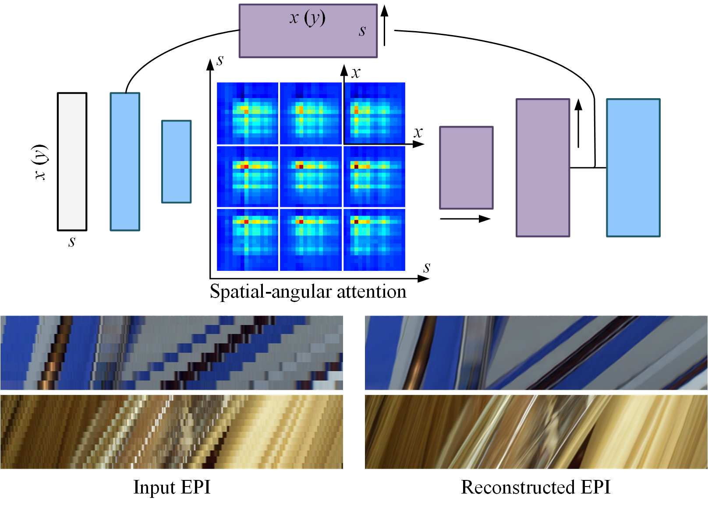

Back to my homepage
arXiv 2020
Spatial-Angular Attention Network for Light Field Reconstruction
Gaochang Wu1, Yingqian Wang2, Yebin Liu3, Lu Fang4, Tianyou Chai1
1. Northeastern University, 2. Nation University of Defense Technology, 3. Tsinghua University, 4. Tsinghua-Berkeley Shenzhen Institute
Abstract
Learning-based light field reconstruction methods demand in constructing a large receptive field by deepening the network to capture correspondences between input views. In this paper, we propose a spatial-angular attention network to perceive correspondences in the light field non-locally, and reconstruct high angular resolution light field in an end-to-end manner. Motivated by the non-local attention mechanism [1], [2], a spatialangular attention module specifically for the high-dimensional light field data is introduced to compute the responses from all the positions in the epipolar plane for each pixel in the light field, and generate an attention map that captures correspondences along the angular dimension. We then propose a multi-scale reconstruction structure to efficiently implement the non-local attention in the low spatial scale, while also preserving the high frequency components in the high spatial scales. Extensive experiments demonstrate the superior performance of the proposed spatialangular attention network for reconstructing sparsely-sampled light fields with non-Lambertian effects.

Fig 1. We propose a spatial-angular attention module embedded in a multiscale reconstruction structure for learning-based light field reconstruction.
Results
Fig 2. Demonstration of attention map on scenes with (a) large disparity and (b) non-Lambertian effect.
Fig 3. Comparison of the results on the light fields from the CIVIT Dataset (16x upsampling).

Fig 4. Comparison of the results on the light fields from the MPI Light Field Archive (16x upsampling).
Technical Paper
Citation
Gaochang Wu, Yingqian Wang, Yebin Liu, Lu Fang, Tianyou Chai. "Spatial-Angular Attention Network for Light Field Reconstruction". IEEE Transactions on Image Processing, 2021, 1-1
@misc{wu2019lapepi,
title={Spatial-Angular Attention Network for Light Field Reconstruction},
author={Gaochang Wu and Yebin Liu and Lu Fang and Tianyou Chai},
year={2020},
journal={IEEE Transactions on Image Processing},
pages={1-1},
}